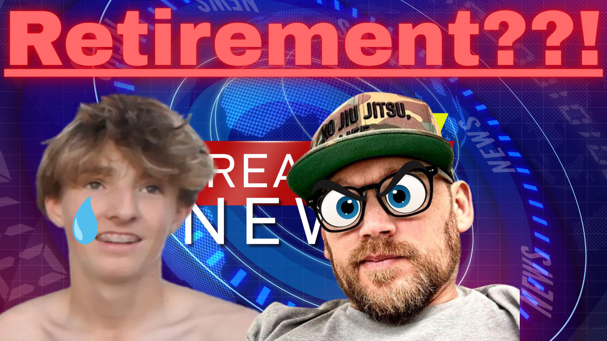

In one of the most dramatic moments in recent NDL history, former 90s pro dooramper Bret Gold has issued a direct and public challenge to recently retired players Owen Buckwalter and Max M: face him together in a 2v1 match — and if they win, he will formally recognize and accept their retirements.
Gold, a dominant force in the early era of competitive dooramp, reportedly made the challenge public within days of Owen Buckwalter's shock retirement announcement. The timing was no accident. Sources close to the situation say Gold was blindsided by the news and took it personally — viewing the departure of two active players so close to the season opener as a betrayal of the sport and its community.
The Challenge
"You don't get to walk away like that," Gold is said to have stated. "Earn it." The terms are simple: Owen and Max compete against Gold in a regulation 2v1 dooramp match. If they win, Gold will officially acknowledge their retirements and say nothing more. If Gold wins, the retirements are considered illegitimate — and both players are expected to return to active competition.
The challenge has been met with a mix of awe and disbelief across the NDL community. Some see it as Gold overstepping — retirement is a personal decision, and no match result should compel a player to continue competing. Others, however, view it as the ultimate sign of respect: Gold refusing to let two players he considers greats slip out quietly without a proper send-off.
No Date Confirmed
As of publication, no match date has been set and neither Owen Buckwalter nor Max M have publicly responded to the challenge. The NDL has made no official statement on whether such a match would be sanctioned or how it would be recorded in the league's records.
What is clear is that Bret Gold is serious. Whether Owen and Max accept remains to be seen — but the dooramp world is watching.